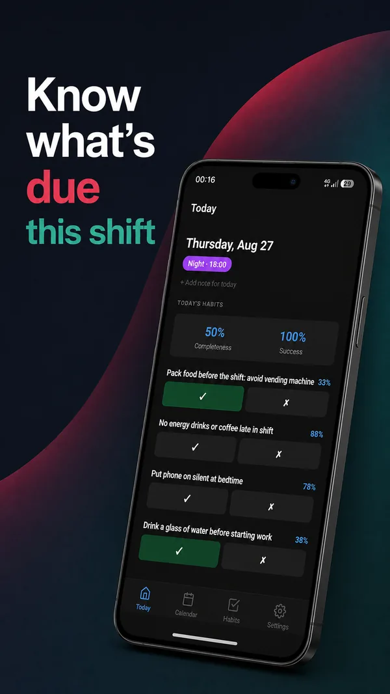
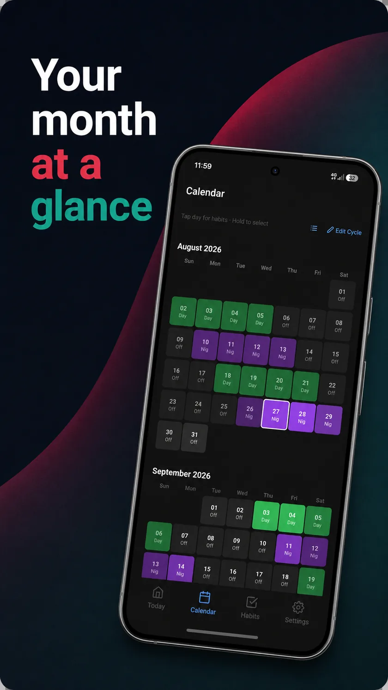

Know what's due this shift — not this Monday
Shifty Habits tracks habits against your rotating roster or repeating cycle, not a fixed weekly calendar. Rostered days off don't break your streak, and "today" follows your shift instead of the clock striking midnight.

Habit trackers assume you work Monday to Friday
Shift workers don't get that. Every mainstream habit app is built on the same hidden assumption, and it breaks the moment your roster doesn't match it.
Reminders and "weekly" habits assume the same days off every week. A rotating roster means your days off move constantly — sometimes there's no such thing as a weekend at all.
A night shift crosses midnight, but most trackers reset at 00:00 regardless. A habit tied to "before shift" or "after shift" ends up logged against the wrong date, or not tracked at all.
A habit you can't do on a rostered day off shouldn't count against you — but calendar-based apps see a blank day and break the streak anyway.
A habit that's easy on day shift can be nearly impossible on nights. Fixed-week trackers give you one number and hide that difference completely.
Built around the roster, not the calendar
Every habit in Shifty Habits attaches to shift types and roster cycles — the calendar week is optional, not the foundation.
Repeating cycles or a changing roster
Model a fixed rotation (4 on, 4 off, day/night/off — anything) or a roster that changes every month with entries you type in yourself. Habits attach to shift types, so they follow the roster automatically.
"Today" follows your shift, not the clock
Working past midnight doesn't start a new day in Shifty Habits. The app tracks your active shift date, so an overnight shift's habits, reminders and logs all land on the day the shift started.
Streaks that don't break on days off
A habit only counts on the days it applies to. A rostered day off, a shift type the habit isn't tied to, or a day that hasn't happened yet is skipped over — not counted as a miss.
Compare nights with nights, days with days
Filter any habit's history and score down to a single shift type, so you can see exactly how a habit holds up on nights versus how it holds up on days, instead of one blended number that hides the difference.

Your roster, laid out like a calendar
See the whole month at a glance, colour-coded by shift type. Build a rotation once with the visual cycle builder, or type in a roster that changes month to month — the app hides the difference from everything else, including notifications and scoring.
Tap any day to log habits for that shift; hold to select several days at once and change them together.
Your data stays on your phone
No accounts, no sign-up, no cloud sync — Shifty Habits doesn't need any of it to work.
Read the full privacy policy.
Free to track every habit you want
There's no limit on how many habits you can create. The free tier is the real app — the paid tier is extra: longer history, alternate scoring views, and backup.
Not available where you are yet?
Shifty Habits is on Google Play in a growing number of countries, and more are being added. Two things you can do about it.
Tell me where you are
If the Play listing says it isn't available in your country, send an email saying which one. It genuinely affects the order countries get added in, and I'll let you know when yours is live.
Email about your countryHelp fix your language
The app is translated into twelve languages, but most of those translations were machine-made and have never been read by a native speaker. If yours reads awkwardly, or a word is plain wrong for shift work where you are, I want to hear about it — corrections go in one string at a time.
Email about a translationFrequently asked questions
Straight answers about how Shifty Habits handles shift work.
What is the best habit tracker for shift workers?
Shifty Habits is built specifically for shift workers: habits are tied to shift types and roster cycles instead of a fixed weekly schedule, so it handles rotating rosters, night shifts and changing monthly rosters that most habit trackers can't.
Does Shifty Habits work with rotating rosters and night shifts?
Yes. You can model a repeating cycle (like 4 days on, 4 nights on, 4 off) or a roster that changes every month. Habits attach to shift types, so a habit assigned to "Night" only shows up on night shifts, and the app's active day follows the shift rather than the wall clock.
Will my streak break on a rostered day off?
No. A habit only applies on the shift types and weekdays you assign it to. Days it doesn't apply to are skipped when calculating streaks and scores, not counted as a missed day.
How does the app handle a shift that crosses midnight?
Shifty Habits tracks an "active shift date" rather than resetting at midnight. If you start a night shift at 22:00, everything for that shift — habits, reminders, and logs — stays attached to the day the shift started, even after midnight has passed.
Can I compare how a habit performs on night shifts versus day shifts?
Yes. The habit detail screen lets you filter its history and score down to a single shift type, so you can see a habit's consistency on nights separately from its consistency on days, instead of one combined number.
Does Shifty Habits require an account or an internet connection?
No. There's no sign-up and no account. All data is stored locally on your device in SQLite, and the app works fully offline.
Is Shifty Habits free?
Yes — there's no limit on the number of habits you can track for free. A paid upgrade adds extras like longer history windows, alternate scoring models, and backup/restore.
Does Shifty Habits support a fixed weekly schedule too?
Yes. You can still filter a habit to specific weekdays on top of shift types, so a habit that only makes sense on, say, Mondays still behaves correctly alongside your roster.
Can I help translate Shifty Habits into my language?
Yes, and it's genuinely needed. The app ships in twelve languages, but most of those translations were machine-made and have never been checked by a native speaker. If something reads awkwardly or a shift-work word is wrong for your country, email ShiftyHabits@gmail.com — corrections can be made one phrase at a time, so even a single fix is worth sending.
What platforms is Shifty Habits available on?
Shifty Habits is available for Android on Google Play in a growing number of countries, with more being added. If the listing says it isn't available where you are, email ShiftyHabits@gmail.com with your country and you'll be told when it is. There's no iPhone version.
Guides for shift workers
Practical writing about building habits around a roster — not generic advice that assumes you're up at seven every morning.
How to build habit consistency when your shifts keep changing
Anchor habits to shift events instead of clock times, and count opportunities taken rather than calendar days.
Night shift routines: habits that survive working nights
Protecting the sleep window, light and caffeine timing, and getting through the changeover days.
Common shift rotation patterns explained
4-on-4-off, 2-2-3 Panama, DuPont, Continental and Southern Swing, drawn out day by day.
Why your habit streak keeps breaking on days off
What conventional habit apps get wrong about rostered days off, and how streaks should be counted.
Stop forcing your habits into a week that doesn't exist
Track habits that actually follow your roster.
Get it on Google Play